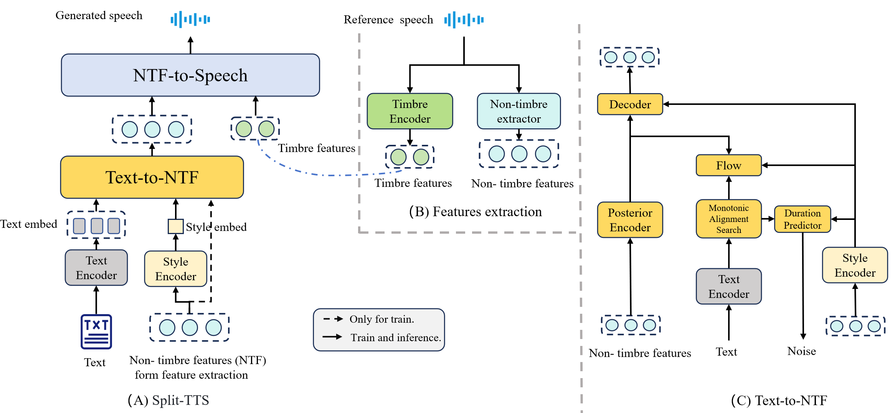

SA-RAS: Speaker-Aware Style Retrieval Augmented Generation for Expressive Zero-shot Text-to-Speech Synthesis
Abstract
Zero-shot text-to-speech (TTS) models can clone an unseen speaker by reference speech. Given multiple reference speeches, Retrieval Augmented Generation (RAG) shows potential in enhancing synthesis quality. The existing method faces two key limitations: semantically-biased retrieval tends to introduce style mismatch, and the deterministic mapping between text and speech fails to fully capture the unique style of the speaker. To solve these, we propose a Speaker-Aware Retrieval Augmented TTS Synthesis (SA-RAS) model. It consists of a two-stage TTS model, Split-TTS and a zero-shot CLAP. The former embeds style and timbre separately to obtain a style space for retrieval. The latter optimizes the correlation between text and style by incorporating speaker information into the retrieval model. Experiments prove that SA-RAS boosts the style expressiveness of synthesized speech.
Model Architecture

Evaluation
Our work focuses on enhancing the style expressiveness of zero-shot TTS through retrieval.
Thus, we conduct comparative experiments of different retrieval methods on Split-TTS, including
(1) Self: Using speech paired with the target text.
(2) Random: Randomly selected speech as reference.
(3) CA-Clap: Using CA-Clap as retrieval method.
(4) w/o speaker: Using ablation model as retrieval method.
(4) Zero-shot Clap: Using our proposed method
Sample 1
Text: There was a moment of silence.
| Groundtruth | Self | Random | CA-Clap | w/o speaker | Proposed |
|---|---|---|---|---|---|
Sample 2
Text: When I think of them I am so agitated!"
| groundtruth | Self | Random | CA-Clap | w/o-speaker | Proposed |
|---|---|---|---|---|---|
Sample 3
Text: "What on EARTH are you so grave about?" she suddenly demanded, fixing her agreeable eyes upon Winterbourne's.
| groundtruth | Self | Random | CA-Clap | w/o-speaker | Proposed |
|---|---|---|---|---|---|
Sample 4
Text: The fact that the President was speaking was sufficient, no matter what he said.
| groundtruth | Self | Random | CA-Clap | w/o-speaker | Proposed |
|---|---|---|---|---|---|
Sample 5
Text: I told her she could wear it.
| groundtruth | Self | Random | CA-Clap | w/o-speaker | Proposed |
|---|---|---|---|---|---|
Sample 6
Text: Your brother is the most charming of men.
| groundtruth | Self | Random | CA-Clap | w/o-speaker | Proposed |
|---|---|---|---|---|---|